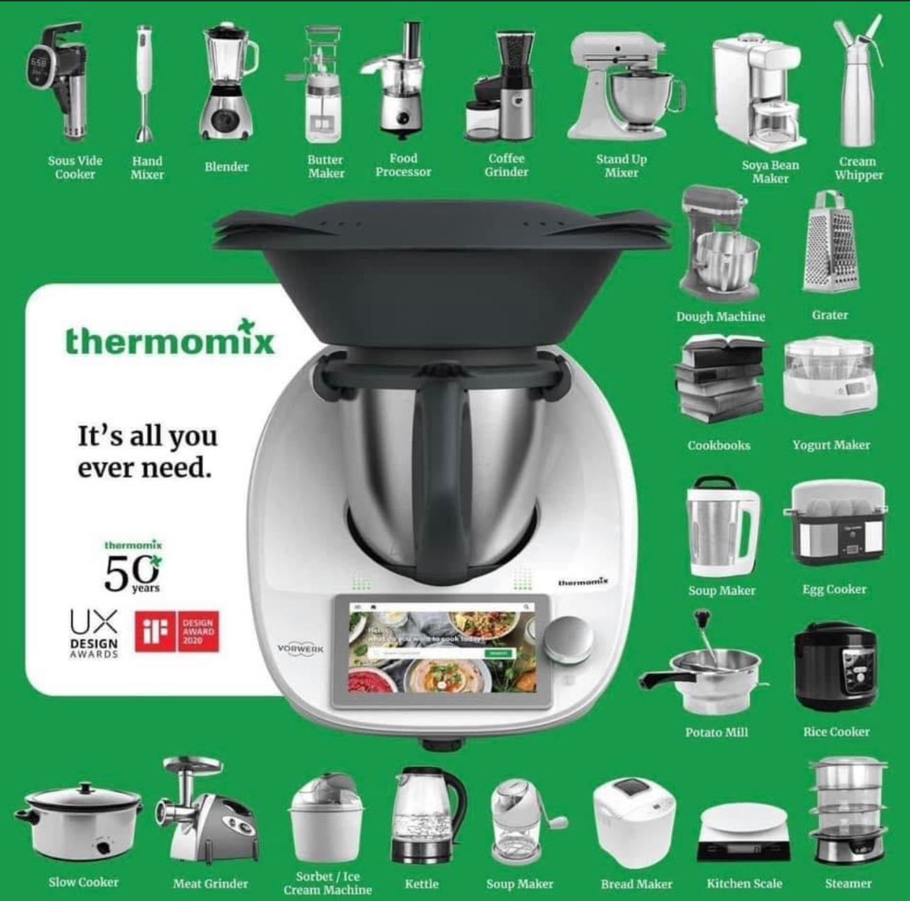

Welcome to my page about Thermomix in UK!
With many years of experience as a Thermomix advisor and team leader in Uk , I'm thrilled to introduce you to the world of Thermomix - the ultimate kitchen companion. Whether you're a seasoned chef or a passionate home cook, Thermomix is here to revolutionize your culinary experience.
Discover the power of innovation combined with simplicity as Thermomix brings precision and convenience to your everyday cooking. This multifunctional appliance is designed to streamline your kitchen routines, saving you time and effort without compromising on taste.
Why choose Thermomix? Let me share a few highlights:
1. Endless Culinary Possibilities: From mouthwatering mains to delectable desserts, Thermomix empowers you to create a wide range of dishes effortlessly. With its versatile functions, such as chopping, mixing, blending, steaming, and even sous vide cooking, Thermomix opens up a world of culinary creativity.
2. Intelligent Guided Cooking: Get ready to be guided step-by-step through each recipe. Thermomix's built-in touchscreen display provides clear instructions, making it easy to follow along and achieve perfect results every time. Say goodbye to recipe books cluttering your counter!
3. Varied Recipe Collection: Explore an extensive library of recipes curated by culinary experts. Thermomix's online platform offers a vast array of dishes suitable for various dietary preferences, including vegetarian, gluten-free, and dairy-free options. From classic favorites to international delights, you'll find inspiration for every occasion.
4. Time-Saving Efficiency: With Thermomix, you'll experience efficient meal preparation like never before. Its precise temperature control and automated functions enable you to multitask while your meal cooks. Spend more quality time with loved ones and less time in the kitchen.
5. Quality and Durability: Thermomix is built to last, incorporating high-quality materials and rigorous testing. It's a kitchen investment that will stand the test of time, ensuring years of exceptional performance and reliability.
Ready to embark on a culinary adventure? Purchase your Thermomix today and elevate your cooking game to new heights. Visit our website or contact our friendly customer support team to learn more and place your order.
Thermomix - where innovation meets gastronomy. Experience the future of cooking with us!
You can also book your free demonstration here, order Thermomix by many ways also get the info how to have it for free‼️‼️